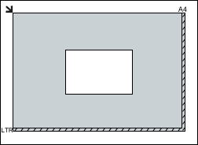
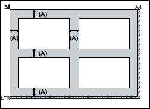
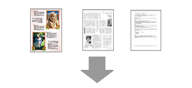
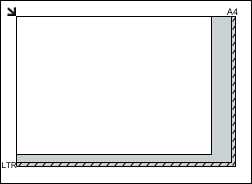
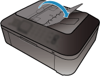
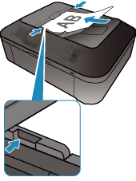

Important
Important-
Do not place objects on the Document Cover. The objects may fall into the machine when the Document Cover is opened. This may damage the machine.
-
Close the Document Cover when scanning.
-
Do not touch the Operation Panel buttons or LCD when opening/closing the Document Cover. May result in unintended operation.
 Placing Documents (ADF (Auto Document Feeder))
Placing Documents (ADF (Auto Document Feeder))
Placing Documents (Platen)
Place documents as described below to allow the machine to detect the document type or size automatically.
Important-
When scanning by specifying the document size in MP Navigator EX or ScanGear (scanner driver), align an upper corner of the document with the corner at the arrow (alignment mark) of the Platen.
-
Photos that have been cut to various shapes and documents smaller than 1.2 inches (3 cm) square cannot be cropped accurately when scanning.
-
Reflective disc labels may not be scanned properly.
| For Photos, Postcards, Business Cards, or BD/DVD/CD | For Magazines, Newspapers, or Text Documents |
|---|---|
|
Placing a Single Document Place the document face-down on the Platen, with 0.4 inches (1 cm) or more space between the edges (diagonally striped area) of the Platen and the document. Portions placed on the diagonally striped area cannot be scanned. Important
Placing Multiple Documents Allow 0.4 inches (1 cm) or more space between the edges (diagonally striped area) of the Platen and documents, and between documents. Portions placed on the diagonally striped area cannot be scanned. more than 0.4 inches (1 cm)  Note Note
|

Place the document face-down on the Platen and align an upper corner of the document with the corner at the arrow (alignment mark) of the Platen. Portions placed on the diagonally striped area cannot be scanned. Important
|
Placing Documents (ADF (Auto Document Feeder))
Important-
Place and align documents of the same size when scanning two or more documents.
-
Supported document sizes when scanning from the ADF:
When scanning one side of the documents at a time: A5 Portrait, B5, A4, Letter, Legal
When scanning both sides of the documents automatically: A4, Letter
-
Open the Document Tray.
 -
Place the documents on the ADF, then adjust the Document Guides to the width of the documents.
Insert the documents face-up until a beep sounds.
Place the documents face-up to scan both sides of the documents.
